<header>
  <mat-toolbar class="toolbar">
    <app-side-menu [ngStyle]="{'width': 'max-width.px >== 768px' ? '0px' : 'auto'}"></app-side-menu>
    <span class="toolbar-logo">
      
    </span>

    <input type="text" class="toolbar-search" placeholder="Digite aqui sua busca">

    <div class="toolbar-action">
      <button mat-icon-button class="toolbar-action__icon" aria-label="Icon button to increase letter">
        
      </button>
      <button mat-icon-button class="toolbar-action__icon" aria-label="Icon button to decrease letter">
        
      </button>
      <button mat-icon-button class="toolbar-action__icon" aria-label="Redirect to common questions">
        
      </button>
      <button mat-icon-button class="toolbar-action__icon toolbar-action__notification" aria-label="Icon button with notifications">
        <mat-icon>notifications</mat-icon>
      </button>
      <button mat-icon-button class="toolbar-action__icon" aria-label="Icon button to setting profile">
        
      </button>
    </div>
  </mat-toolbar>
</header>
